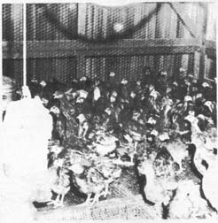

These hens have never touched the ground. They were grown on wire and were transferred to these individual laying cages as pullets. Records of egg production are readily maintained and non-producers may be readily eliminated.